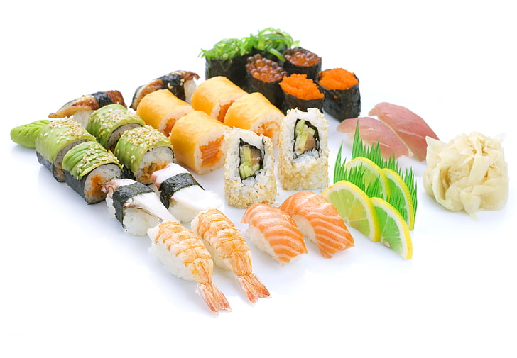
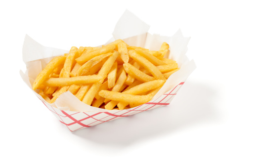

Mata Kuliah Pemrograman WEB 1
Universitas Komputer Indonesia
Profile
NIM
: 10121050
Nama
: Rio Christian Cesar Sihombing
Kelas
: IF-2
BURGER
Hamburger (atau sering kali disebut dengan burger) adalah sejenis makanan berupa roti berbentuk bundar yang diiris dua dan
di tengahnya diisi dengan patty yang biasanya diambil dari daging, kemudian sayur-sayuran berupa selada, tomat dan bawang bombai.
Sebagai sausnya, burger diberi berbagai jenis saus seperti mayones, saus tomat dan sambal serta mustard.
PIZZA
Pizza adalah roti berbentuk bundar pipih yang dipanggang di oven kemudian dilumuri saus tomat serta keju mozarella. Biasanya pizza
juga ditambahkan bahan-bahan topping sesuai selera seperti sosis, daging, paprika, jamur, dan lain-lain.
DONAT
Donat adalah penganan yang digoreng, dibuat dari adonan tepung terigu, gula pasir, kuning telur, ragi roti, dan mentega. Donat yang
paling umum adalah donat dengan bentuk seperti cincin dan ada lubang di tengahnya, biasanya ditaburi dengan mesis atau gula halus.
HOT DOG
Hot dog adalah suatu jenis sosis yang dimasak atau diasapi dan memiliki tekstur yang lebih halus serta rasa yang lebih lembut dan basah daripada kebanyakan sosis.

SUSHI
Sushi adalah makanan Jepang yang terdiri dari nasi yang dikepal bersama lauk berupa makanan laut, daging, sayuran yang mentah atau sudah
dimasak kemudian dicocol dengan kecap dan wasabi.

KENTANG GORENG
Kentang goreng adalah hidangan yang dibuat dari potongan-potongan kentang yang digoreng dalam minyak goreng panas. Di dalam menu rumah-rumah makan,
kentang goreng yang dipotong panjang-panjang dan digoreng dalam keadaan terendam di dalam minyak goreng panas disebut French fries.